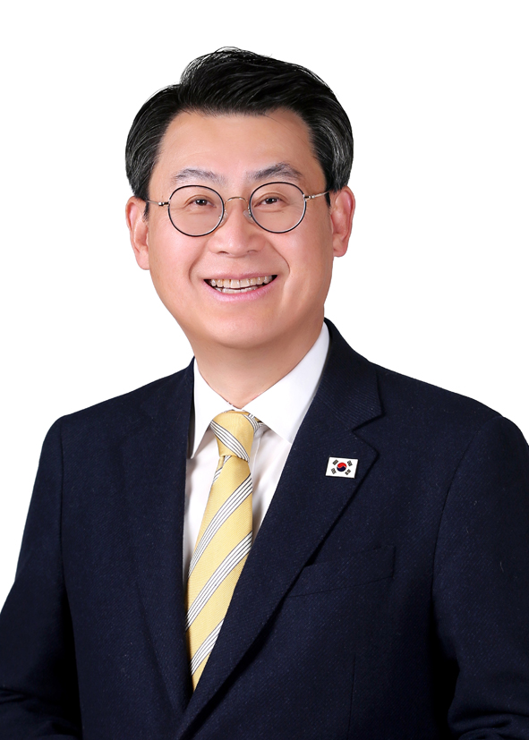
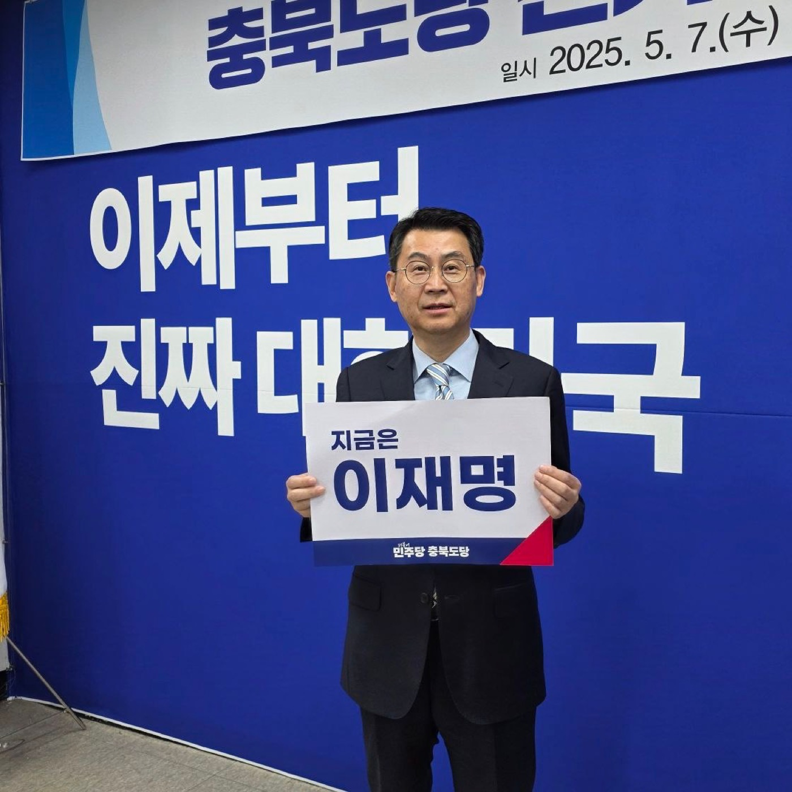
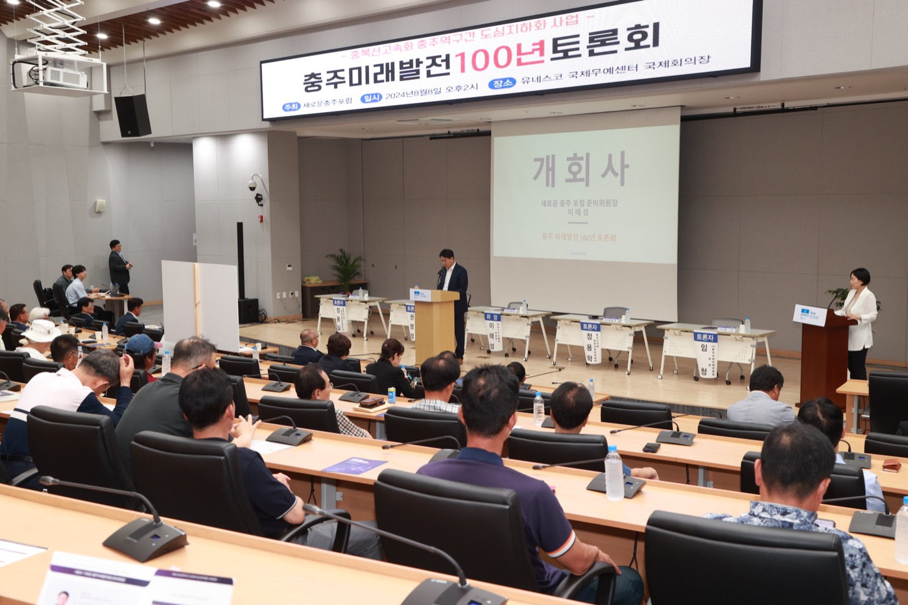
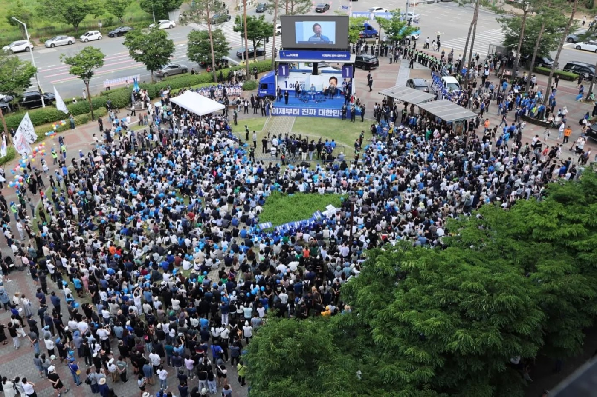
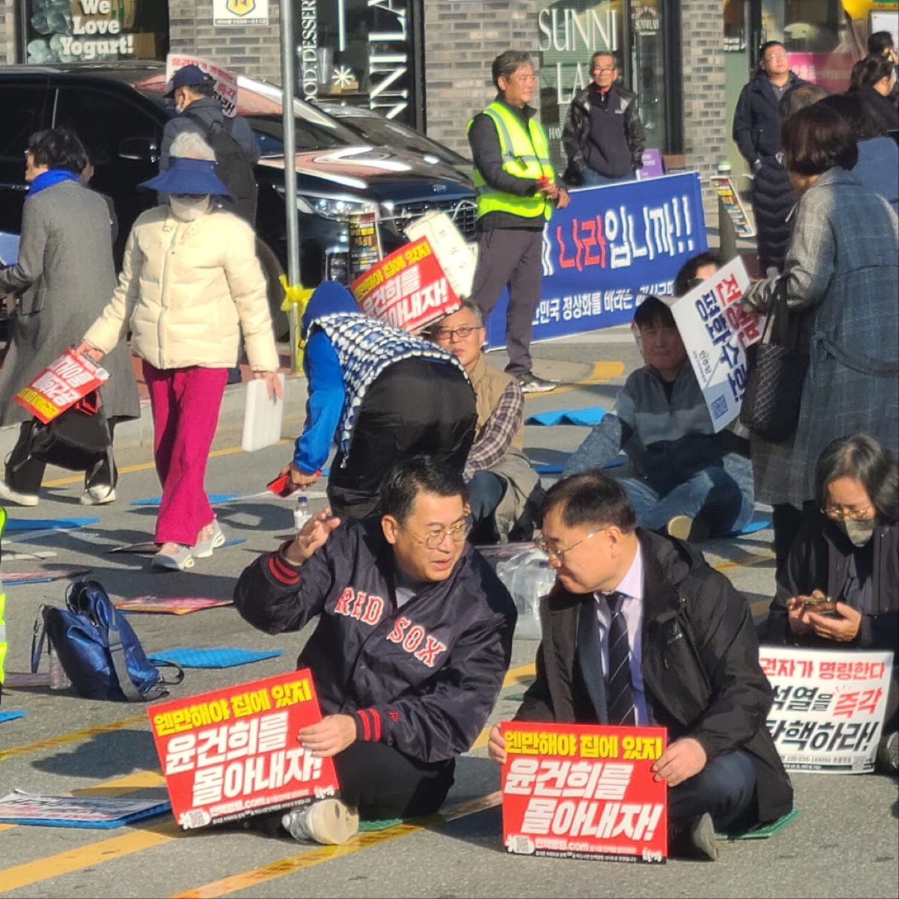
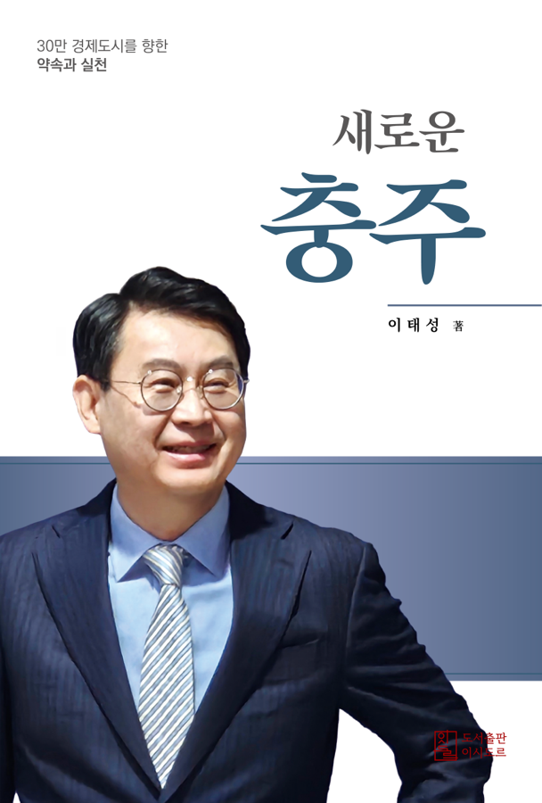

기업 현장과 공공정책을 두루 거친 경제·산업 정책 전문가.
충주를 기반으로 순환경제와 지속가능한 성장을 설계합니다.

더불어민주당 국가균형발전특별위원회 부위원장1969년 충주에서 태어나 서울에서 기업 경력을 쌓은 뒤 고향으로 돌아왔습니다. 산업과 일자리, 사람을 잇는 구조적 해법을 찾아온 여정은 이제 새로운 단계로 향합니다.
“정치란 결국 사람을 연결하고, 공간을 바꾸는 일입니다. 산업과 일자리, 환경이 조화를 이루는 지속가능한 충주를 만들겠습니다.”
민주당 정치인으로서의 가치, 충주에 뿌리내린 지역 기반, 그리고 경제·순환경제 정책 전문성.
국가균형발전특별위원회 부위원장, 충청북도당 부위원장, 더민주전국혁신회의 충북 공동대표. 제20대 대선 총괄선대위 정책소통단 부단장으로 당의 가치를 현장에서 실천해 왔습니다.
충북대 대학원 순환경제융합학 겸임교수, 한국ESG협회 부회장. 자원 안보와 순환경제를 결합한 산업 전략을 구체적 정책 문서로 구현합니다.
충주에서 나고 자란 토박이. 오창과학산업단지 1급 본부장으로 청년친화형 산단 지정과 환경개선펀드 300억 원 유치를 이끈 충북 산업현장 전문가입니다.
단순한 공장 유치를 넘어, 순환경제·RE100·에너지전환·첨단산업으로 충주를 중부내륙권 미래산업 중심도시로 만듭니다.
충주의 미래 경쟁력은 산업단지 확대가 아니라 미래산업을 선점할 전략 역량에 달려 있습니다. 순환경제와 자원 안보를 결합해 국비 확보와 양질의 일자리로 연결하겠습니다.
충주와 충북 곳곳, 정책 토론회와 민생 현장에서 시민과 함께합니다.





수도권에 집중된 기회를 바라보기만 하던 시대를 넘어, 충주가 주도하는 구조로의 전환을 제안합니다. 순환경제와 미래산업, 지역 균형발전을 통해 충주를 사람과 자원, 기회가 모이는 ‘새로운 중심’으로 세우려는 구체적 비전과 실천 방안을 담았습니다.
“충주는 바뀔 수 있다. 준비된 사람이 바꾼다.”